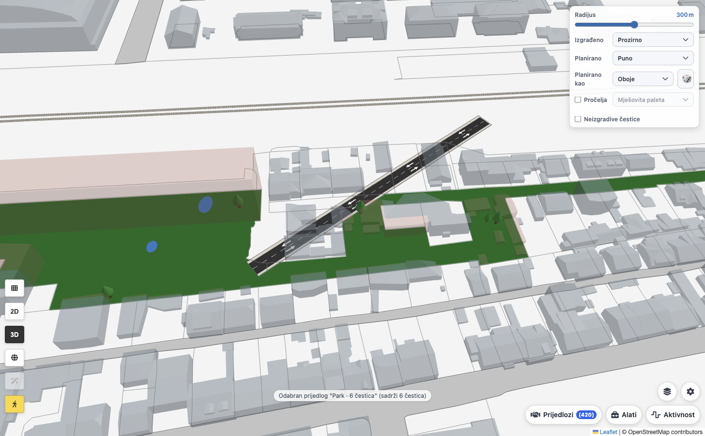

A common picture
See the change
before it happens
A park on this corner. Homes around a courtyard. A safer street.
Place an idea on the map and explore it in 2D or 3D. Neighbours can discuss a visible proposal in the context of the place they know.
Explore the planning tools ↗

In the product: a proposal shown alongside existing buildings.